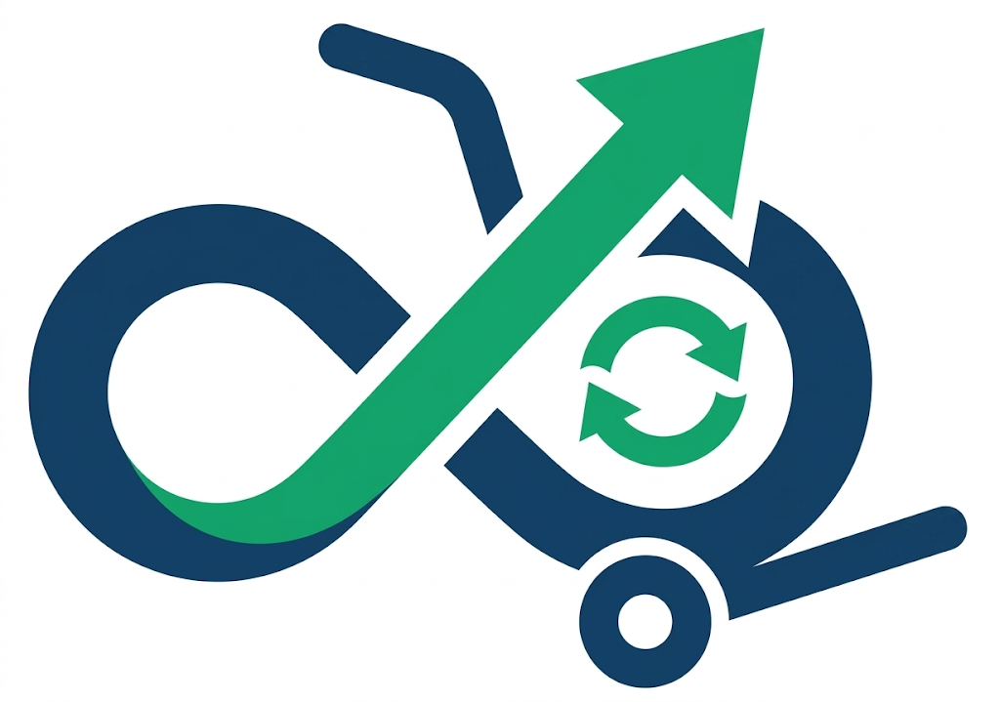

So arbeiten wir
Warum LogProc?
Spezialisierte Einkaufsexpertise
Wir verfügen über tiefgehende operative Erfahrung im Logistik-Einkauf und kennen die aktuellen Preisdynamiken der europäischen Frachtmärkte genau.
Nachweisbare Einsparungen
Wir decken ungenutzte Optimierungspotenziale auf und erzielen messbare Kostenvorteile durch datenbasierte Ausschreibungsrunden und Verhandlungen.

Flexible Auslagerung
Sie sichern sich strategisches Know-how auf Abruf für Ihre Sourcing-Zyklen – vollkommen flexibel und bedarfsorientiert skaliert.